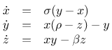
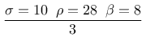
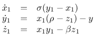
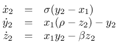
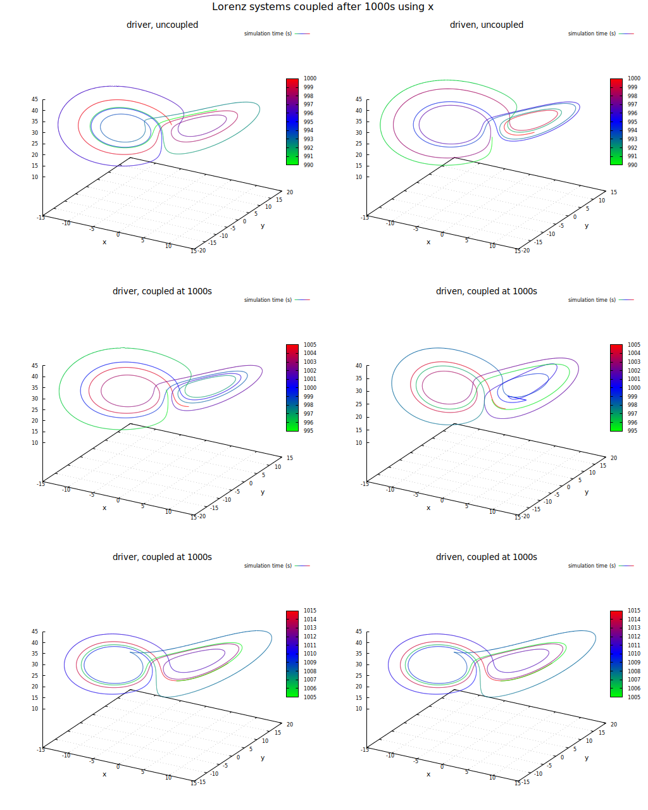
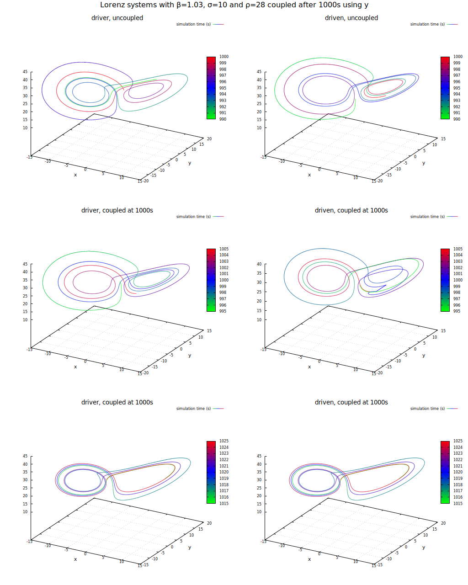
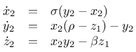
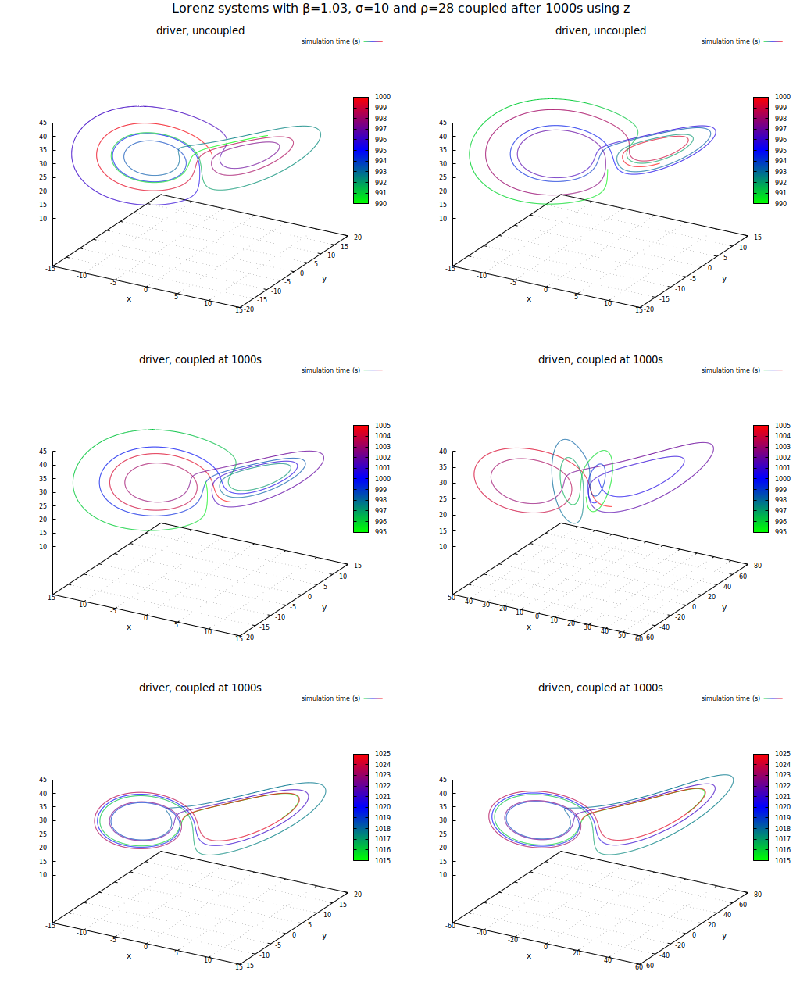
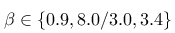
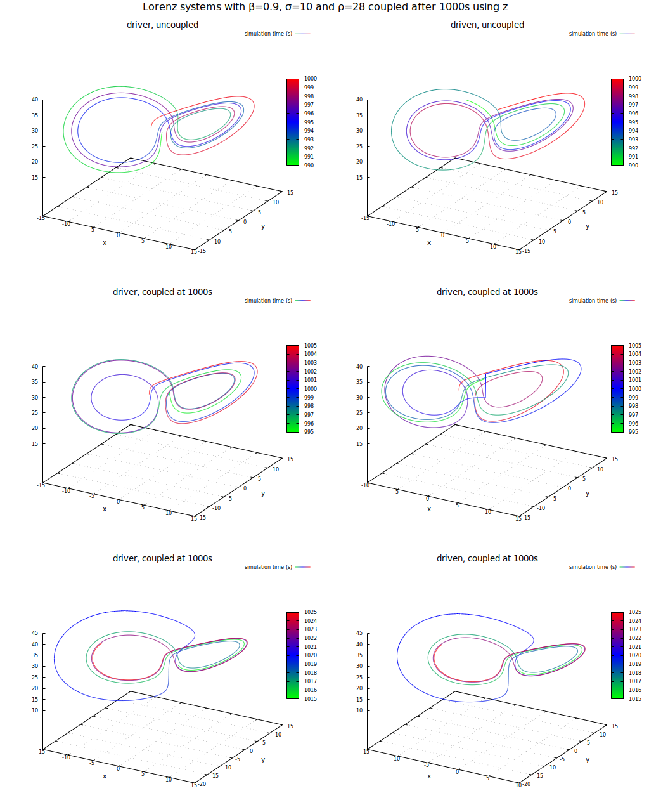

Nachdem ich das Buch und die Videos von Steven Strogatz durch hatte, habe ich ein Experiment nachvollziehen wollen, zu dem die Idee von einem seiner Studenten gekommen war:
Ich habe zunächst das traditionelle Lorenz-System mit

benutzt. Dieses System löste ich numerisch mit je zwei unterschiedlichen Startbedingungen für eine gewisse Zeit bevor ich ein der beiden Systeme mit einer der Zustandsvariablen des anderen Systems beaufschlagte. Ich benutzte dazu den Parametersatz
Am Beispiel der Übertragung der Zustandsvariable x sieht das wie folgt aus:Driver:

Driven:

Das Ergebnis sieht man hier: in der ersten Zeile sind beide Trajektorien zum Zeitpunkt unmittelbar bevor die Kopplung erfolgt dargestellt. Man erkennt deutlich, dass die Zustände und damit die aktuelle Position im Zustandsraum beider Systeme stark voneinander abweicht. In der zweiten Zeile ist das Verhalten beider Systeme um diesen Zeitraum herum dargestellt. Man erkennt noch Unterschiede in Lage und Form der Trajektorie - schaut man sich jedoch die Position am Ende des dargestellten Ausschnitts an, kann man bereits erahnen, dass die Unterschiede immer kleiner werden. In der letzten Zeile schließlich erkennt man keine Unterschiede mehr zwischen beiden Trajektorien - Das zweite System wurde mit dem ersten nur durch die Übertragung einer Statusvariablen synchronisiert!

Untersuchung des Verhaltens zweier Lorenz-Systeme bei Übertragung einer Statusvariablen (x)Bei Übertragung der Statusvariablen y erkennt man exakt dasselbe Verhalten:
Driver:

Driven:

Untersuchung des Verhaltens zweier Lorenz-Systeme bei Übertragung einer Statusvariablen (y)Wie Strogatz et. al. bereits in ihren ursprünglichen Veröffentlichungen feststellten, gelingt die Synchronisation nicht mittels der Übertragung der Statusvariablen z: Man erreicht zwar eine qualitative Annäherung der Trajektorien, allerdings weichen sie qualitativ (man beachte die Skalenbeschriftungen!) stark voneinander ab.
Driver:
Driven:


Untersuchung des Verhaltens zweier Lorenz-Systeme bei Übertragung einer Statusvariablen (z)Ich habe die Untersuchung für verschiedene Parameter wiederholt:

Die Ergebnisse sind im folgenden über ihre Thumbnails zu erreichen. Interessant war das Ergebnis beim Wert 0.9 und Synchronisierung über z: hier zeigte sich, dass die Synchronisation über z bei entsprechender Wahl der Parameter des Systems ebenfalls möglich ist:

Untersuchung des Verhaltens zweier Lorenz-Systeme bei Übertragung einer Statusvariablen (z) und Parametrierung mit β=0.9
Links
Synchronization in the Lorenz system
SYNCHRONIZATION OF GENERALIZED LORENZ SYSTEM USING ADAPTIVE CONTROLLER
Chaos Synchronization in Lorenz System
Chaos synchronization of the master-slave generalized Lorenz systems via linear state error feedback control
Synchronization in the Lorenz system: Stability and robustness
Synchronization of Chen’s Attractor and Lorenz Chaotic Systems by Nonlinear Coupling Function
Master-slave synchronization and the Lorenz equations
Chaos Synchronization in Lorenz System
Screenshots
{kind=link}
{kind=link}
{kind=link}
{kind=link}
{kind=link}
{kind=link}
{kind=link}
{kind=link}
{kind=link}
Artikel, die hierher verlinken
"Funktionale" Programmierung in dWb+
31.10.2022
Nach meinem letzten Artikel zum Thema dWb+ ist bereits einige Zeit vergangen. Ich habe lange überlegt, wie ich eine Anwendung schreiben könnte, die mir gestattet, mit einem System herumzuspielen, das ich aus dem Buch von Prof.Strogatz kannte.
Synchronisierung von Lorenz-Systemen II
09.10.2020
Ich habe in einem vorhergehenden Artikel ein Paper zur Synchronisierung chaotischer Systeme nachvollzogen. Dort hatte ich gezeigt, dass - anders als im ursprünglichen Paper - eine Synchronisierung zweier gleich parametrierter Lorenz-Systeme bei geeigneter Parameterwahl auch über die Zustandsvariable z möglich ist.


Tags
Android Basteln C und C++ Chaos Datenbanken Docker dWb+ ESP Wifi Garten Geo Git(lab|hub) Go GUI Gui Hardware Java Jupyter Komponenten Links Linux Markdown Markup Music Numerik PKI-X.509-CA Python QBrowser Rants Raspi Revisited Security Software-Test sQLshell TeleGrafana Verschiedenes Video Virtualisierung Windows Upcoming...
Neueste Artikel
- Github hat keine Ahnung von Crypto und Sicherheit
Morgen - am 1.2.2023 - soll mein neuer $dayjob anfgangen - und damit die Quelle, aus der ich die Mittel beziehe, weiterhin meine Kuchenzutaten bezahlen zu können. Das wird irgendwas mit Sicherheit sein. Und am Tag davor hat sich - wer eigentlich genau? - überlegt: "Komm, lass ihn uns nochmal so richig auf Betriebstemperatur überkochen!". Aber - der Reihe nach...
Weiterlesen... - Aktualisierung TileServer - Restrukturierung
Ich habe meinen Tile-Server für OpenStreetMap-Daten aktualisiert
Weiterlesen... - Drunken Bishop in Java
Ich habe neulich wieder einmal Lust auf eine kleine Fingerübung gehabt und deshalb ein Verfahren in Java implementiert, das ich ursprünglich als Möglichkeit kennenlernte, zwei Schlüssel beim Versuch des Aufbaus einer Verbindung mittels SSH zu vergleichen...
Weiterlesen...
Manche nennen es Blog, manche Web-Seite - ich schreibe hier hin und wieder über meine Erlebnisse, Rückschläge und Erleuchtungen bei meinen Hobbies.
Wer daran teilhaben und eventuell sogar davon profitieren möchte, muß damit leben, daß ich hin und wieder kleine Ausflüge in Bereiche mache, die nichts mit IT, Administration oder Softwareentwicklung zu tun haben.
Ich wünsche allen Lesern viel Spaß und hin und wieder einen kleinen AHA!-Effekt...
PS: Meine öffentlichen GitHub-Repositories findet man hier - meine öffentlichen GitLab-Repositories finden sich dagegen hier.